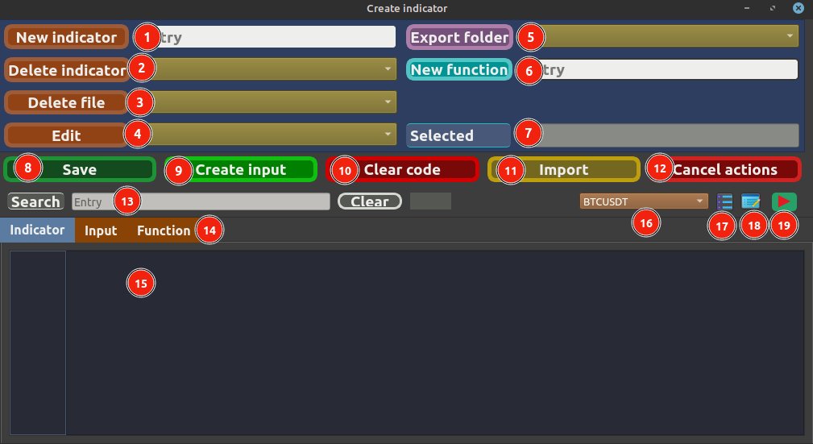
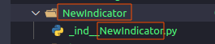
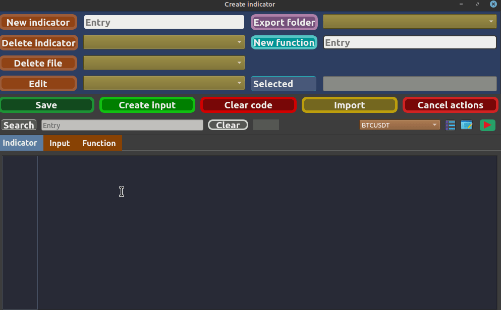
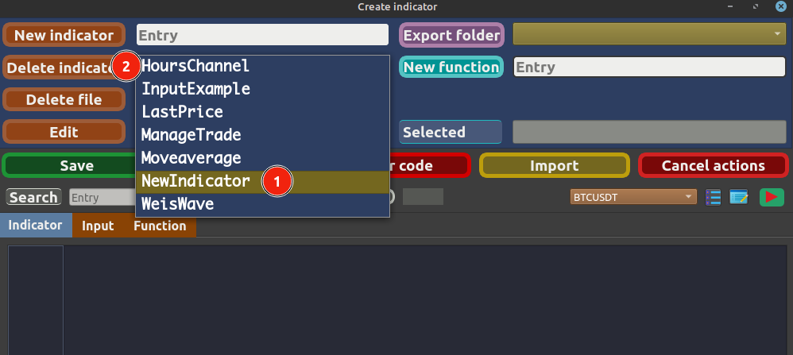
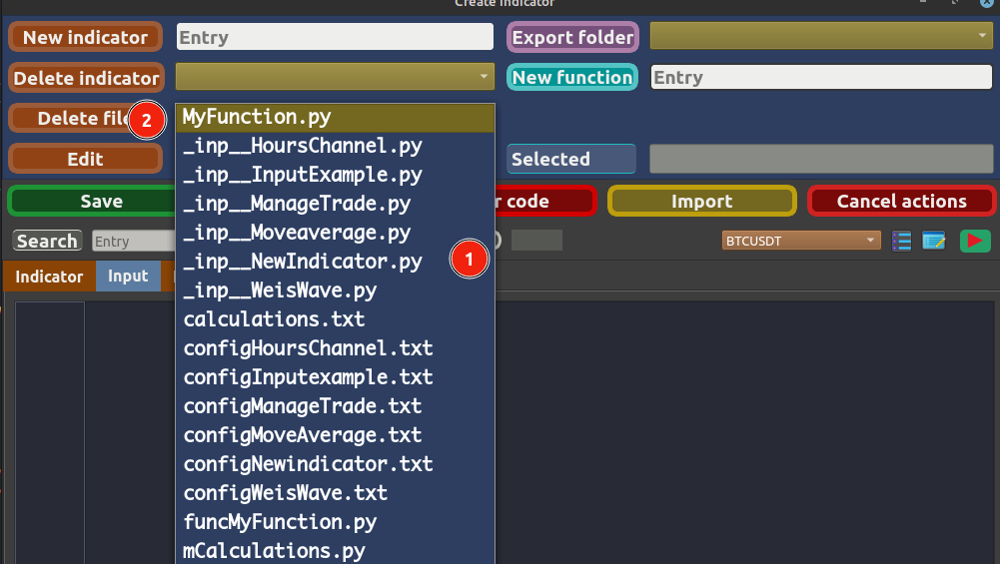
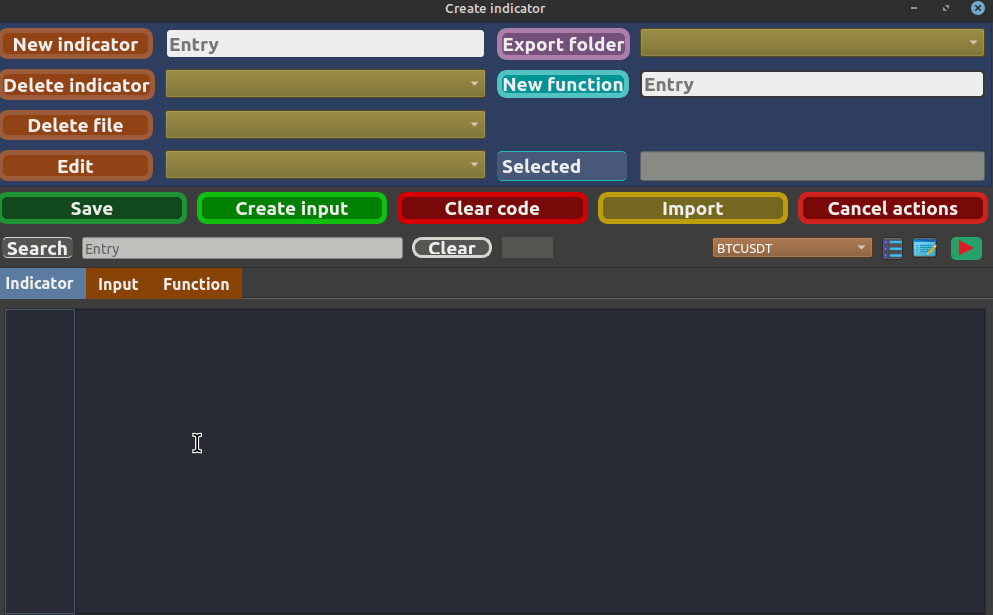
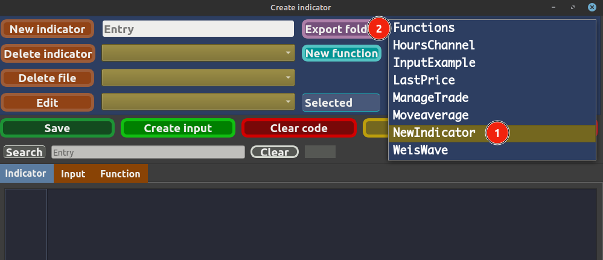
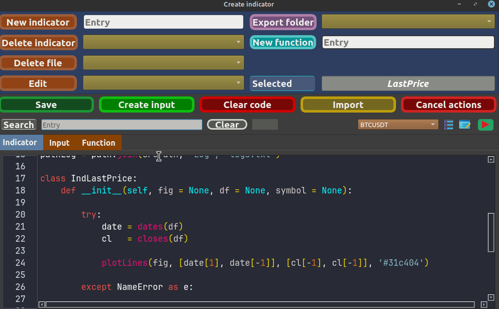
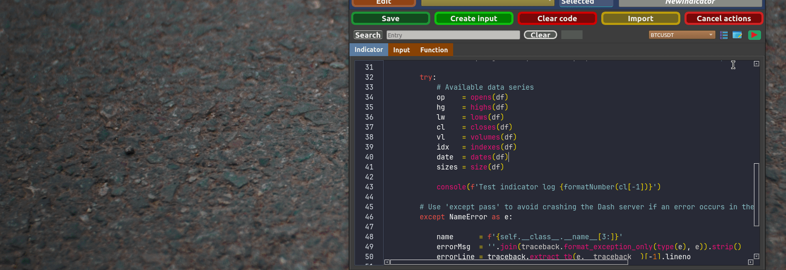

* 1 - Creates a folder with the name of the indicator and automatically generates a base file for the indicator.
* 2 - Deletes the indicator folder.
* 3 - Deletes files related to input and .txt files.
* 4 - Edits files according to the selected tab, sending the content to the code editor 15.
* 5 - Exports the indicator folder, creating a backup so you can share the indicator.
* 6 - New function, it will be saved in the Functions directory.
* 7 - Shows where you are editing the file from.
* 8 - Saves changes in the folder visible in field 7.
* 9 - Base code to create an input file.
* Note: Select the Indicator tab and go to field 4 to select the indicator file to obtain the folder path, then switch to the Input tab and use the button to import the example code.
* 10 - Clears the text in the code editor 15 and also clears field 7.
* 11 - Imports the folder with the indicator, it will be saved directly in the Indicators directory of the project.
* 12 - Clears the selected fields.
* 13 - Dynamic search field, typing a word will show the total found and highlight it in the code.
* 14 - Each tab serves to save the file with its correct name following a necessary pattern and also when using button 10 to import the correct example code.
* 15 - Code editor with syntax highlighting.
* 16 - Symbol selection to use with the log.
* 17 - Opens the log screen.
* 18 - Saves the log inserted in the indicator.
* 19 - With the Input tab selected and content in field 15, opens the input screen to view the changes.
Using the indicator creation screen
* Internal functioning.
** When creating the indicator or input, it will be renamed with the prefix _ind__ or _inp__.
** Never use these prefixes at the beginning of a function name; function names are free and you can use the prefix func to differentiate the files when manipulating them.
** When creating code with an external editor, the main class name of the indicator should start with the prefix Ind, and in the case of a class for input, it should start with the prefix Inp.
* Note: You can rename the class name as long as you maintain the Ind or Inp prefix.
However, if you rename the indicator folder or file, you need to keep a naming pattern as shown in the image.

* Tip:Create the files using the project's standard editor, and then you can use your preferred editor by exporting the relevant folder.1st Creating an indicator

* Note: Pay attention to the confirmation message with the name of the indicator; however, it has been internally renamed starting with _ind__.
This is necessary to automatically find the newly created indicators.
If you create a file with an external editor, maintain the naming pattern of the indicator starting with _ind__YourIndicator or _inp__YourInput.2nd Creating an input3rd Editing indicator, input, or function* Note: Choose a tab, the Edit field will only display the files related to the selected tab.4th Deleting the indicator folder or fileIndicator:

File:
* Note: Deletes both .py files and .txt configuration files.
- Files __ind__ are not visible for deletion; you need to use the Delete Indicator button.

5th Creating a function

6th Exporting the folder

* Note: Exports the indicator folder and the folder that contains functions.
- When importing, only use the indicator folders because they will be saved directly in the Indicators directory of the project.
7º CLEARS8º Busca de texto

9º LOGS
